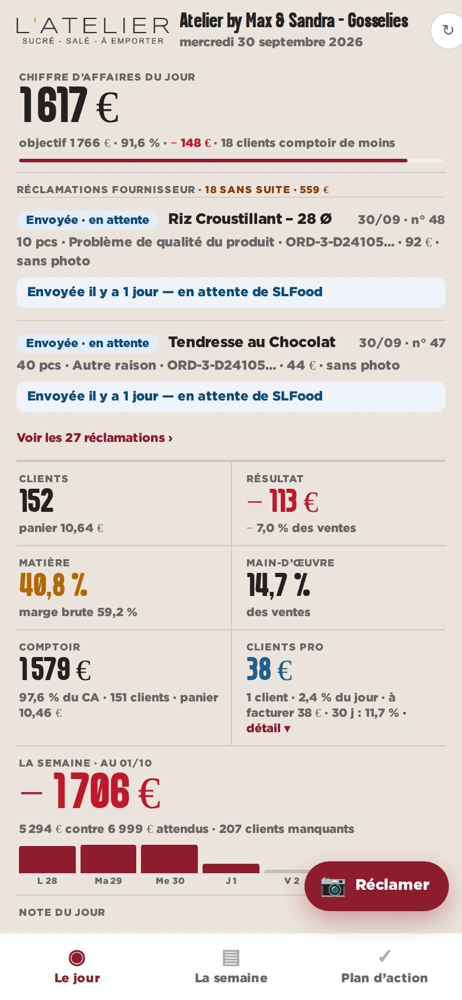
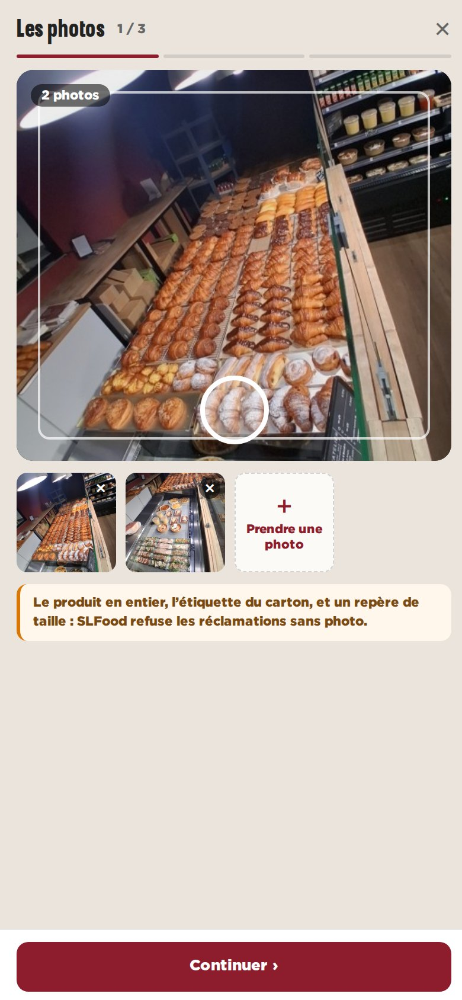
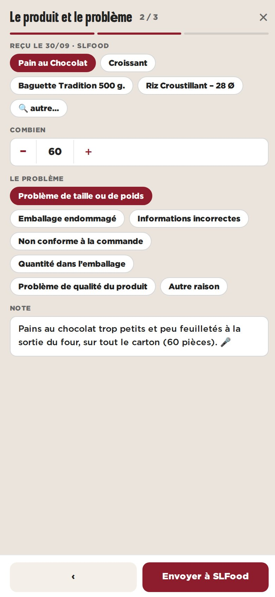

maquette · dashboard magasin · Gosselies · 27 réclamations réelles sur 12 mois (panel) · l’exemple de saisie est une illustration
C — La photo d’abord, au téléphone
Pensé pour la réception de la marchandise : un bouton « Réclamer » flottant sur le mur du téléphone. On photographie d’abord, puis on touche le produit parmi ceux de la dernière livraison, la quantité, le motif, une note (dictée possible), et on envoie. L’historique reste en carte sur le mur.
Pour
- Au geste de la réception : la photo est prise tout de suite, le reste en trente secondes.
- Les produits de la dernière livraison proposés d’office.
- Le moins de saisie au clavier.
Contre
- Pensé téléphone d’abord : au bureau, il faut une version tiroir (A) ou page (B).
- Les produits hors dernière livraison passent par la recherche.

téléphone — le mur et le bouton

1 — les photos

2 — le produit et le problème